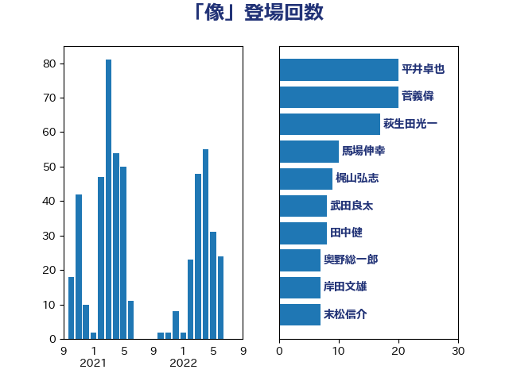

単語「像」

| 平井卓也 | 自由民主党 | 20 回 |
| 菅義偉 | 自由民主党 | 20 回 |
| 萩生田光一 | 自由民主党 | 17 回 |
| 馬場伸幸 | 日本維新の会 | 10 回 |
| 梶山弘志 | 自由民主党 | 9 回 |
| 武田良太 | 自由民主党 | 8 回 |
| 田中健 | 国民民主党 | 8 回 |
| 奥野総一郎 | 立憲民主党 | 7 回 |
| 岸田文雄 | 自由民主党 | 7 回 |
| 末松信介 | 自由民主党 | 7 回 |
| 藤田文武 | 日本維新の会 | 7 回 |
| 金子恭之 | 自由民主党 | 7 回 |
| 本村伸子 | 日本共産党 | 6 回 |
| 上野通子 | 自由民主党 | 5 回 |
| 城内実 | 自由民主党 | 5 回 |
| 小林鷹之 | 自由民主党 | 5 回 |
| 紙智子 | 日本共産党 | 5 回 |
| 金子恵美 | 立憲民主党 | 5 回 |
| 井上信治 | 自由民主党 | 4 回 |
| 伊藤俊輔 | 立憲民主党 | 4 回 |
| 佐々木さやか | 公明党 | 4 回 |
| 和田有一朗 | 日本維新の会 | 4 回 |
| 塩川鉄也 | 日本共産党 | 4 回 |
| 山田宏 | 自由民主党 | 4 回 |
| 本田太郎 | 自由民主党 | 4 回 |
| 林芳正 | 自由民主党 | 4 回 |
| 田村憲久 | 自由民主党 | 4 回 |
| 小泉進次郎 | 自由民主党 | 3 回 |
| 後藤茂之 | 自由民主党 | 3 回 |
| 有村治子 | 自由民主党 | 3 回 |
| 田村貴昭 | 日本共産党 | 3 回 |
| 石井章 | 日本維新の会 | 3 回 |
| 神谷裕 | 立憲民主党 | 3 回 |
| 西岡秀子 | 国民民主党 | 3 回 |
| 谷合正明 | 公明党 | 3 回 |
| 足立康史 | 日本維新の会 | 3 回 |
| 阿部知子 | 立憲民主党 | 3 回 |
| 井上哲士 | 日本共産党 | 2 回 |
| 伊藤孝江 | 公明党 | 2 回 |
| 加藤勝信 | 自由民主党 | 2 回 |
| 勝目康 | 自由民主党 | 2 回 |
| 勝部賢志 | 立憲民主党 | 2 回 |
| 古川元久 | 国民民主党 | 2 回 |
| 古川康 | 自由民主党 | 2 回 |
| 古賀之士 | 立憲民主党 | 2 回 |
| 吉良よし子 | 日本共産党 | 2 回 |
| 室井邦彦 | 日本維新の会 | 2 回 |
| 小宮山泰子 | 立憲民主党 | 2 回 |
| 小沼巧 | 立憲民主党 | 2 回 |
| 山添拓 | 日本共産党 | 2 回 |
| 松本尚 | 自由民主党 | 2 回 |
| 梅村聡 | 日本維新の会 | 2 回 |
| 森田俊和 | 立憲民主党 | 2 回 |
| 浅野哲 | 国民民主党 | 2 回 |
| 浜田聡 | NHK党 | 2 回 |
| 甘利明 | 自由民主党 | 2 回 |
| 田村智子 | 日本共産党 | 2 回 |
| 石井正弘 | 自由民主党 | 2 回 |
| 磯崎仁彦 | 自由民主党 | 2 回 |
| 芳賀道也 | 国民民主党 | 2 回 |
| 若宮健嗣 | 自由民主党 | 2 回 |
| 進藤金日子 | 自由民主党 | 2 回 |
| 道下大樹 | 立憲民主党 | 2 回 |
| 野田聖子 | 自由民主党 | 2 回 |
| 金村龍那 | 日本維新の会 | 2 回 |
| 鈴木俊一 | 自由民主党 | 2 回 |
| 青木愛 | 立憲民主党 | 2 回 |
| ながえ孝子 | 無所属 | 1 回 |
| 三ッ林裕巳 | 自由民主党 | 1 回 |
| 上月良祐 | 自由民主党 | 1 回 |
| 上杉謙太郎 | 自由民主党 | 1 回 |
| 下村博文 | 自由民主党 | 1 回 |
| 下野六太 | 公明党 | 1 回 |
| 中島克仁 | 立憲民主党 | 1 回 |
| 中川郁子 | 自由民主党 | 1 回 |
| 中曽根康隆 | 自由民主党 | 1 回 |
| 丹羽秀樹 | 自由民主党 | 1 回 |
| 伊藤孝恵 | 国民民主党 | 1 回 |
| 古屋範子 | 公明党 | 1 回 |
| 吉田はるみ | 立憲民主党 | 1 回 |
| 吉田統彦 | 立憲民主党 | 1 回 |
| 大塚耕平 | 国民民主党 | 1 回 |
| 大島敦 | 立憲民主党 | 1 回 |
| 安江伸夫 | 公明党 | 1 回 |
| 宮崎政久 | 自由民主党 | 1 回 |
| 宮崎雅夫 | 自由民主党 | 1 回 |
| 宮本岳志 | 日本共産党 | 1 回 |
| 小林茂樹 | 自由民主党 | 1 回 |
| 小渕優子 | 自由民主党 | 1 回 |
| 小野泰輔 | 日本維新の会 | 1 回 |
| 尾身朝子 | 自由民主党 | 1 回 |
| 山口壯 | 自由民主党 | 1 回 |
| 山岡達丸 | 立憲民主党 | 1 回 |
| 山岸一生 | 立憲民主党 | 1 回 |
| 山本博司 | 公明党 | 1 回 |
| 山際大志郎 | 自由民主党 | 1 回 |
| 平山佐知子 | 無所属 | 1 回 |
| 平林晃 | 公明党 | 1 回 |
| 木原稔 | 自由民主党 | 1 回 |
| 杉本和巳 | 日本維新の会 | 1 回 |
| 東徹 | 日本維新の会 | 1 回 |
| 松沢成文 | 日本維新の会 | 1 回 |
| 枝野幸男 | 立憲民主党 | 1 回 |
| 森まさこ | 自由民主党 | 1 回 |
| 森英介 | 自由民主党 | 1 回 |
| 横山信一 | 公明党 | 1 回 |
| 横沢高徳 | 立憲民主党 | 1 回 |
| 江島潔 | 自由民主党 | 1 回 |
| 清水貴之 | 日本維新の会 | 1 回 |
| 渡辺創 | 立憲民主党 | 1 回 |
| 熊谷裕人 | 立憲民主党 | 1 回 |
| 牧山ひろえ | 立憲民主党 | 1 回 |
| 玉木雄一郎 | 国民民主党 | 1 回 |
| 田名部匡代 | 立憲民主党 | 1 回 |
| 石垣のりこ | 立憲民主党 | 1 回 |
| 石川博崇 | 公明党 | 1 回 |
| 礒崎哲史 | 国民民主党 | 1 回 |
| 神田憲次 | 自由民主党 | 1 回 |
| 福田昭夫 | 立憲民主党 | 1 回 |
| 福田達夫 | 自由民主党 | 1 回 |
| 笠井亮 | 日本共産党 | 1 回 |
| 細田博之 | 自由民主党 | 1 回 |
| 舞立昇治 | 自由民主党 | 1 回 |
| 舟山康江 | 国民民主党 | 1 回 |
| 若松謙維 | 公明党 | 1 回 |
| 茂木敏充 | 自由民主党 | 1 回 |
| 薗浦健太郎 | 自由民主党 | 1 回 |
| 藤井比早之 | 自由民主党 | 1 回 |
| 西田実仁 | 公明党 | 1 回 |
| 近藤昭一 | 立憲民主党 | 1 回 |
| 野上浩太郎 | 自由民主党 | 1 回 |
| 鈴木淳司 | 自由民主党 | 1 回 |
| 長友慎治 | 国民民主党 | 1 回 |
| 阿部司 | 日本維新の会 | 1 回 |
| 高木かおり | 日本維新の会 | 1 回 |
| 高野光二郎 | 自由民主党 | 1 回 |
| 高階恵美子 | 自由民主党 | 1 回 |
| 麻生太郎 | 自由民主党 | 1 回 |